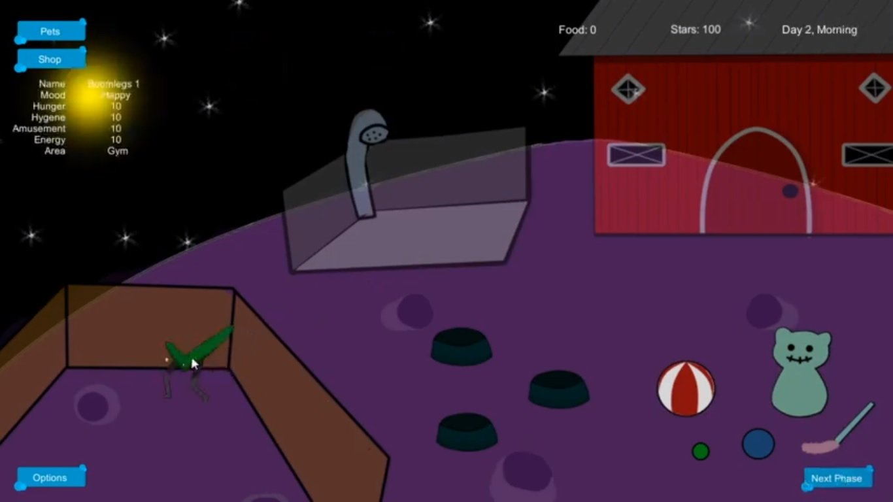

Center for Creativity Connect
Center for Creativity Connect is an application created for the nonprofit organization The Chuck Jones Center for Creativity (CJCC). This project was part of the class IN4MTX 191A and 191B, a student-run and student-driven senior project class. The app is dedicated to connect CJCC's network of teaching artists with the ability to sign up for different art programs and volunteer work through their mobile device. The application would allow the teaching artists to sign up with an account and log in to the system to apply for available art programs if they have the necessary skills and level of expertise. Users can also receive notifications about their upcoming programs along with an option for the teachers to check in to a program once it starts.

I worked with a group of six people to create this app from October 2018 to March 2019. I participated in multiple meetings with our sponsor Craig Kausen, the current owner of CJCC, to elicit necessary requirements to create the app. I worked with another group member to ensure that all requirements were correct and clear. As a group, we then analyzed the requirements and narrowed down the features that were necessary for the Minimum Viable Product. I also worked with the group's lead designer on the application's overall design and functionalities. We used a bright blue color scheme because our sponsor is about creativity and fun, but also emphasized simple features that any teaching artist, regardless of age or technological knowledge, would be able to use easily.
Our group faced multiple challenges along the way including scope creep; we had to decline creating the organization's desktop administrative application as there would be less time to complete the mobile application. We also faced problems with designing the visual interface for the application, as there were differing opinions about whether we should focus on creativity or usability. In the end we decided to focus more on usability so users would be able to view pages easily. We overcame these hurdles throughout our 20 weeks of working together and successfully completed the app for CJCC.
Gratitude Journal
Gratitude Journal is an application created for the class IN4MTX 134, User Interaction Software. I worked in a group of six people to create an application dedicated to mental health patients with a focus on artificial intelligence capabilities. Gratitude Journal is a personal journal application where users can submit daily entries of things that they are grateful for. The application was created using Ionic and Firebase for to store data in a database. The AI program embedded in the app develops further as the user continues to input more data and will suggest articles for the user to read based on their replies and interests. The app promotes positivity and gratefulness towards multiple things in life such as family, friends, and small items that bring happiness. From the start, our main focus was not to create the app based on curing mental health, but instead to make it a resource for individuals who need it. Since therapy can be expensive, especially for busy college students, the app would be a more accessible and cheaper alternative that will be available through mobile devices.
My main role in this project was to conduct research on various things related to our topic. I looked up articles related to AI/ML technologies to use for our application.
Twitter Sentiment Analysis

(insert text here)
FromYouFlowers Redesign
This was a project for the IN4MTX 132 class "Project in HCI and Evaluation", which involved redesigning an existing website. The redesign was to improve the user experience for the website's users while also keeping in mind the website's purpose and goal. For my group of five, we chose an online flower website called FromYouFlowers where customers could buy flower bouquets online; we chose this site because we determined that the layout of the website was very messy and cluttered with its navigation and organizational structure.

The picture above is the current user interface design for FromYouFlowers. We decided to redesign the navigation bar and search bars for our main focus. As seen in the picture, the navigation bar has many tabs of different names but many of them seem irrelevant and inconsistent. For example, "Birthday" could easily be placed under "Occasions", and the "Flowers" tab (enlarged to show the subcategories) includes other topics than flower types such as "Grower's Collection" and "Next Day Delivery". Furthermore, we deemed the search bar to be


This is the design that we have proposed to make FromYouFlowers more user friendly and personalized. We interviewed potential customers of FromYouFlowers and did research on fellow competitors to create the best overall experience that would benefit both the company and their audience.
Cosmic Eggstravaganza
This was a project for IN4MTX 125 / CS 113, a game development class. My group of five people created a pet simulation game that takes place in space. Players are stuck on an asteroid in space and are unable to get back home to their home planet without a spaceship. The main gameplay consists of the players raising unique pets and monsters on their farm by clicking and dragging them to various areas to raise their stats. Once players feel like their pets are strong and mature enough, they can then sell the pets to gain more money. The ultimate goal is to raise enough money to buy a new spaceship and go home.
My main role in this project was lead artist. I created the art for everything in the game, which included the pets, background, and assets for the user interface. All of the art was sketched out on paper first before doing lineart and coloring through Adobe Photoshop. The game itself was created by our three programmers using Unity, and the sound assets were found on the Unity store.
The challenges we faced while creating Cosmic Eggstravaganza were mostly focused on time constraints. As we only had ten weeks to complete the game, we decided early on that the game would consist on more simple controls and a straightforward goal. Furthermore, our concept was a pet raising simulator, which could be catered to any type of player including young children and elderly people. Another big challenge was that we only had one artist (which ended up being me) to create the art for the game. I managed to overcome this on my own and finish most of the necessary art required for our final prototype. However, I regret not being able to create more pets and refine the game's background to be cleaner and more polished.